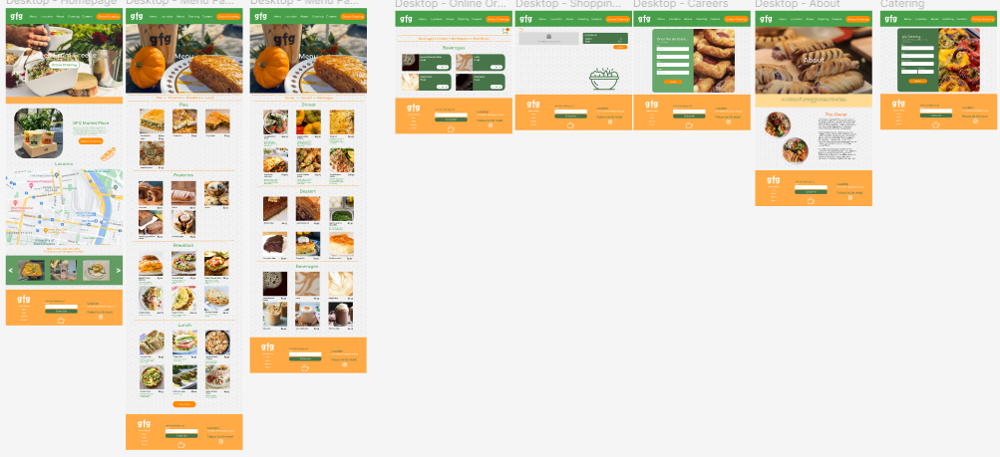
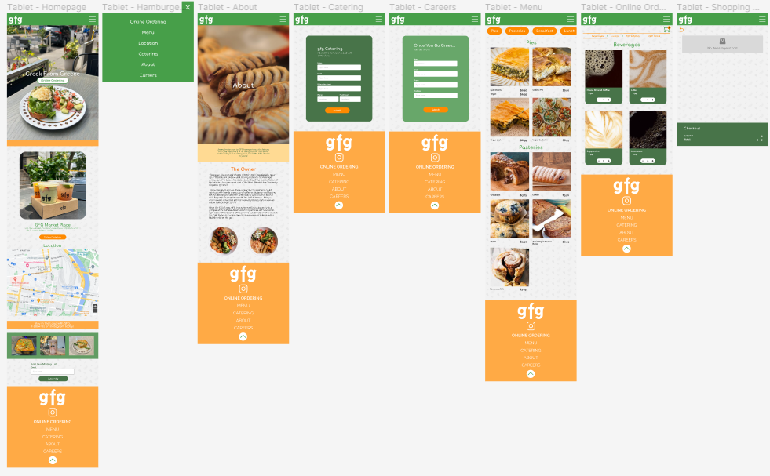
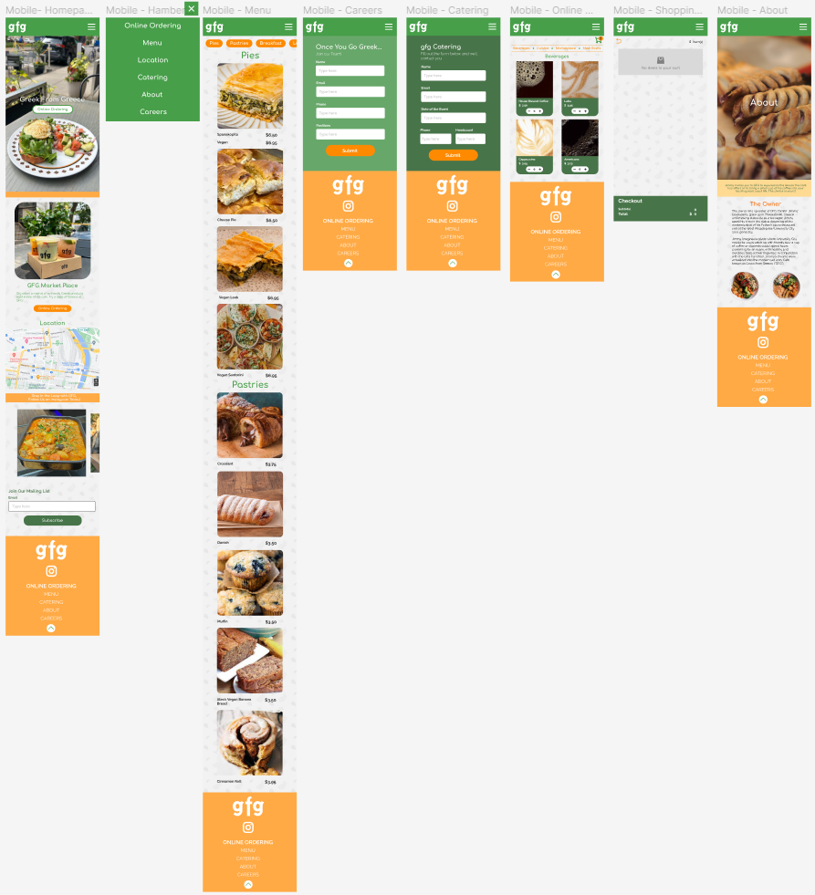

Who’s my target audience? Since the restaurant is based on Drexel’s campus, I want to redesign this website for college students, who may not have a lot of time between classes and want to order food beforehand. I want to redesign the website to make it more easily accessible to students who don’t have a lot of time to spare. The website should be concise and efficient for students to use while getting food on their breaks. I also want to make the website for visually interesting to draw in more people when they look at the website. I also want to be able to redesign the website to be readable and easy to follow.
? I find that the menu is hard to navigate through and when you click online ordering. It opens a different tab with the menu, which can make the website a lot slower when you are trying to order food quickly. You’ll also have to keep scrolling through each item to get to what you want and some items don’t have a picture which makes the user feel unsure on what to order if they cannot visually see what they’re ordering. The menu does not have a way for the user to click to a certain section that the user would want. For instance, if you want to only get a drink, you would have to scroll down to the menu to look at the drinks. Another negative is how uninviting the website is with the color scheme, I feel just black and white scream Greek food. While black and white should be used in certain websites, I feel as though the food does not match with the websites’ color scheme.
  To conclude this, I feel like my final design feels more welcoming to users with the overall color scheme and layout of the compared to original more muted colors in the original. I also feel like its user-friendly like the menu isn’t just a block of text and you can navigate through each category of the menu easily by pressing the buttons. In the original, there was no way of finding a specific kind of food you want but in my redesign, you can.